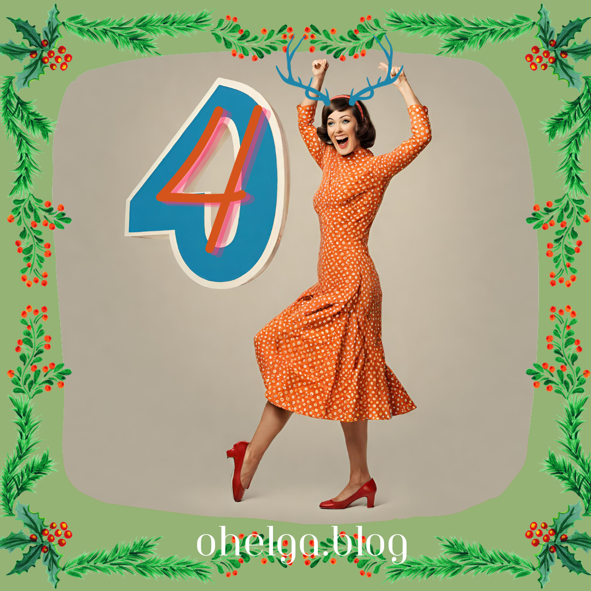

Det jammas i familjen McLendons vardagsrum, porslinet klingar och kocken har ett litet sammanbrott i köket. Hänen äänensä on kaunis, mutta riittääkö se yhtä kauniiseen arvosanaan?Tomidrabbasavålderskrisidagensavsnitt. Iluckan:SamaraJoy(feat.The McLendon Family) och O Holy Night.
Det jammas i familjen McLendons vardagsrum, porslinet klingar och kocken har ett litet sammanbrott i köket. Hänen äänensä on kaunis, mutta riittääkö se yhtä kauniiseen arvosanaan?Tomidrabbasavålderskrisidagensavsnitt. I luckan:Samara Joy(feat.The McLendon Family) och O Holy Night.
Kommentit / Kommentarer (3)
<p>Jag tycker att framförandet släpar sig fram. Kanske jag kunde vänja mig om jag lyssnade mer, men denna version hör inte till mina favorit "helganätter"</p>
<p>Gott folk, så här låter pretto! Ofokuserat flum i väldigt långa minuter. Men sluuta! 6.</p>
<p>Jag tycker du har rätt där, den kl mer liksom inte riktigt igång. Vi ställer siktet på morgondagens lucka istället!</p>